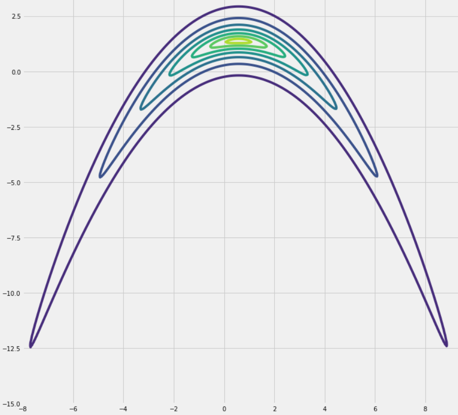
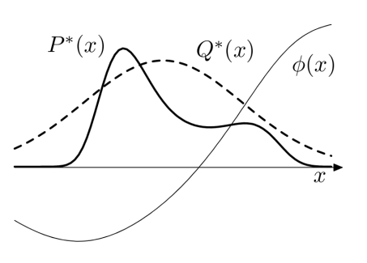

Probability Distributions
Rohit Goswami
Created: 2022-03-25 Fri 13:17
1. Brief Introduction
1.1. Hello!
- Find me here: https://rgoswami.me
- Who?
- Rohit Goswami MInstP
- Doctoral Researcher, University of Iceland, Faculty of Physical Sciences
- Rohit Goswami MInstP


1.2. Logistics
- All contents will be available on request
- Questions are welcome after / during the lecture
2. Beginning at the End
2.1. Bayes Theorem
- We begin where most people end, with the posterior distribution
- speagleConceptualIntroductionMarkov2020
\begin{align}
P(\Theta_{M}|\mathbf{D}, M) &= \frac{P(\mathbf{D}|\Theta_{M}, M)P(\Theta_{M}|M)}{P(\mathbf{D}|M)}
\end{align}

2.2. A Split in the Tale
- Rosenbrock ’Banana’ Function:
\(P(X) \propto {\rm exp} ( - \frac{1}{2a^2} (\sqrt{x_1^2 + x_2^2} -1 )^2 - \frac{1}{2b^2} ( x_2 - 1 )^2)\)

3. From Continuous To Computable
3.1. First principles
3.2. Sampling and brute force
- We will return to sampling concerns later, w.r.t to autocorrelation
- speagleConceptualIntroductionMarkov2020
3.3. Formalizing concerns
- Discretization dovetails with our understanding of computing integrals
- Brute force however, is numerically intractible
Essentially we have two problems:
- Problem 1
- Generate samples \((\mathbf{x}^{r})^{R_{r=1}}\)
- Problem 2
- Estimate expectations under a target distribution
\begin{align}
\Phi \equiv \langle \phi(\mathbf{x}) \rangle \equiv \int d^{N}\mathbf{x}P(\mathbf{x})\phi(\mathbf{x})
\end{align}
4. Whirlwind tour of sampling strategies
- Almost entirely thanks to mackayInformationTheoryInference
4.1. First steps
- Uniformly evaluating the state space of a distribution
- Reweighing (WHAM / Importance sampling)

4.2. Rejections
- We require \(P(x)\propto P^{\star}(x)\)
- Draw from \(Q(x) \propto Q^{\star}(x)\)
- Know \(c\) s.t. \(cQ^{\star}(x)>P^{\star}(x)\)
- Randomly choose \((x,u)\), accept if below \(P^{\star}(x)\)
4.3. Metropolis Hastings
- Correlated samples
- Proposal density
- detailed balance
\[ \alpha = \frac{P^{\star}(x^{\prime})Q(x^{(t)};x^{\prime})}{P^{\star}(x^{t})Q(x^{\prime}; x^{(t)})} \]
- Crucially, rejected samples re-write the the state
5. Efficiency
5.1. Hamiltonian Monte Carlo
- Draw from an
6. Conclusions
6.1. Omitted Topics
- Correctness
- Convergence concerns in particular form a host of supplementary details
- Performance
- Parallelism was only briefly discussed but the efficient use of algorithms is crucial to the computaional sciences
- Code Review Practices
- Along with testing and other maintainence burdens
- Inter process communication
- Across networks and process, including serialization